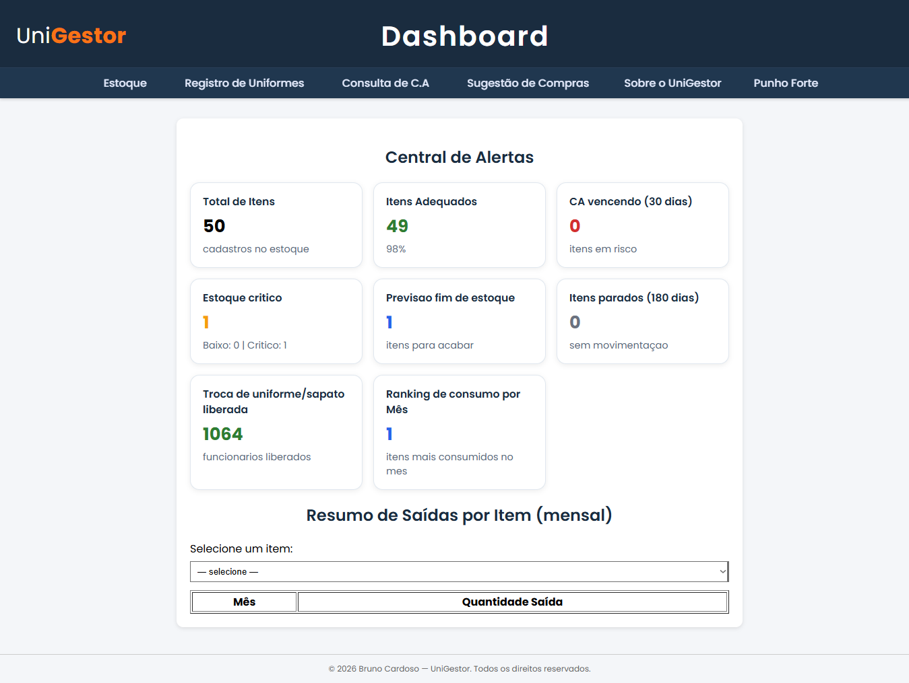
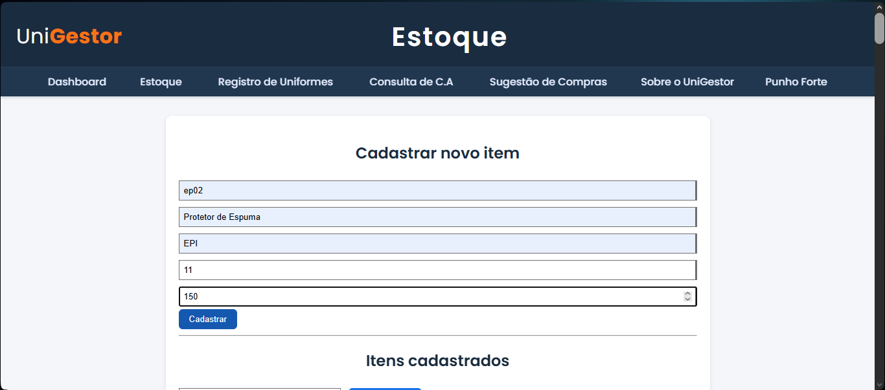
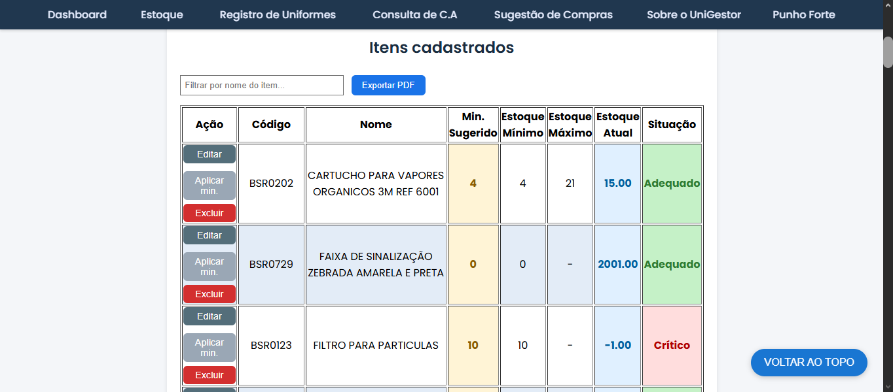
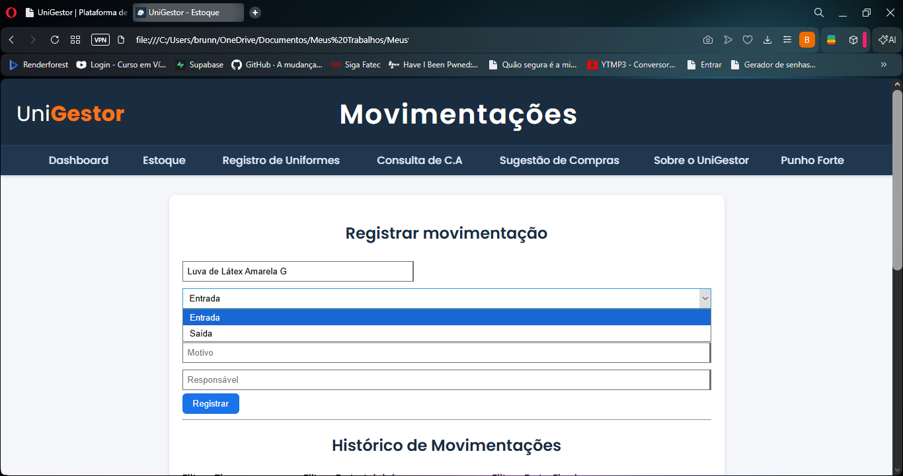
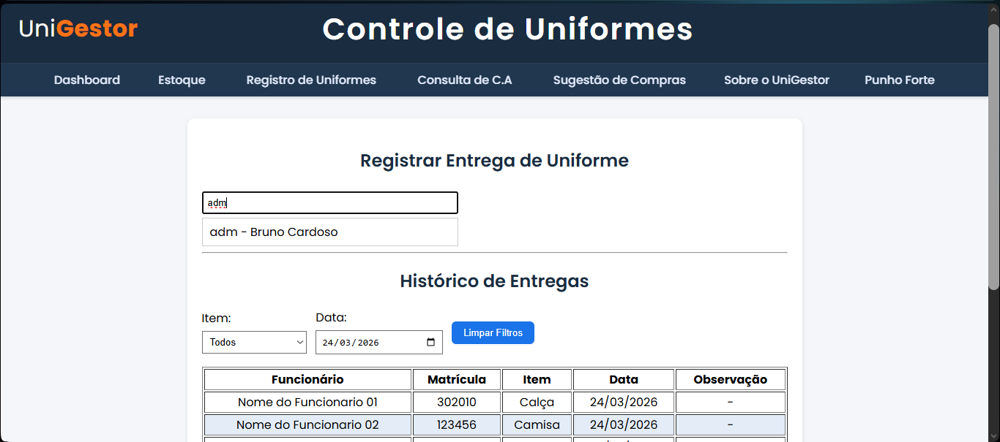
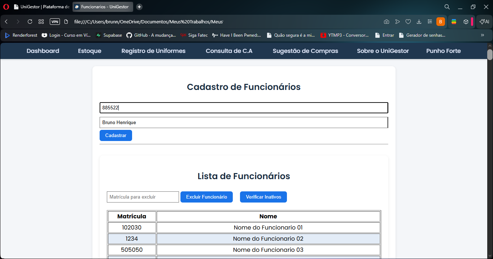

Proposito
Centralizar a gestao de materiais, uniformes e EPIs em um sistema unico para reduzir riscos, padronizar processos e acelerar rotinas de operação.
Gestão Inteligente para Operação Real
O UniGestor foi criado para eliminar controles paralelos, aumentar a rastreabilidade e dar seguranca para decisao de compra, reposicao e auditoria.
O que é o UniGestor
Centralizar a gestao de materiais, uniformes e EPIs em um sistema unico para reduzir riscos, padronizar processos e acelerar rotinas de operação.
Empresas com operação de campo, manutencao, industria, logistica ou qualquer equipe que precise de rastreabilidade real de estoque e entregas por colaborador.
Funcionalidades completas
Identificação por codigo, categoria e niveis minimo e maximo para cada material.
Entradas, saidas e ajustes com historico de data, responsavel e motivo.
Visão de saldo atual, pontos de atenção e suporte a decisão de reposição.
Registro de entregas por colaborador e acompanhamento de trocas.
Base de funcionarios integrada ao historico de entregas e consumos.
Apoio na verificação de certificados para itens de EPI e conformidade.
Suporte para planejamento de reposição com foco em continuidade operacional.
Indicadores visuais para monitorar risco, consumo e desempenho da operacao.
Beneficios de negocio
Evita falta ou excesso de material com visao clara de estoque e consumo.
Troca planilhas dispersas por fluxo único, auditavel e orientado por dados.
Historico estruturado para compliance e tomada de decisão da gestão.

Visão consolidada com alertas e indicadores da operação.

Detalhamento por código, categoria e níveis de controle.

Cadastro de itens, níveis de controle e situação operacional.

Historico rastreavel com entradas, saidas e ajustes.

Controle por colaborador com historico de entregas.

Base integrada para gestão de entregas e consumo.
Apresentando o UniGestor em um video curto e direto, focado nos beneficios e funcionalidades mais relevantes para decisores.
Assistir video de apresentacaoComercial
O valor é definido sob consulta, de acordo com o porte da operação e escopo de implantação. Agende uma conversa para diagnostico e proposta personalizada.